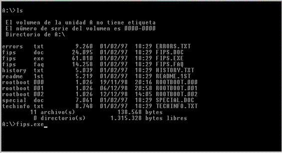
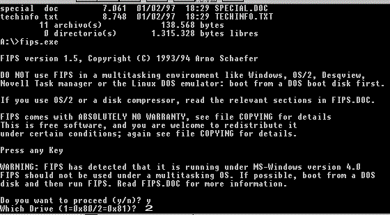
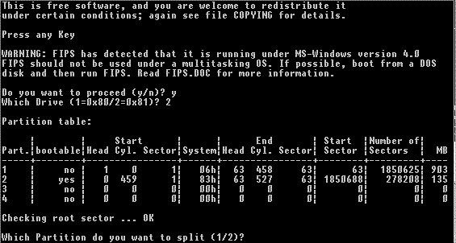
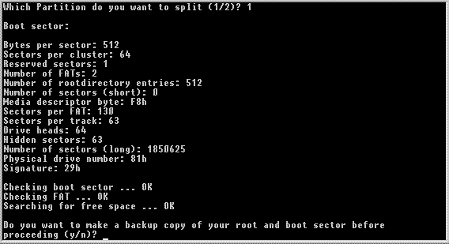
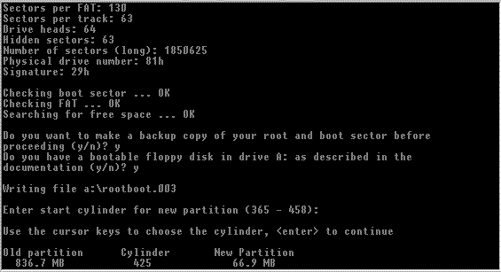
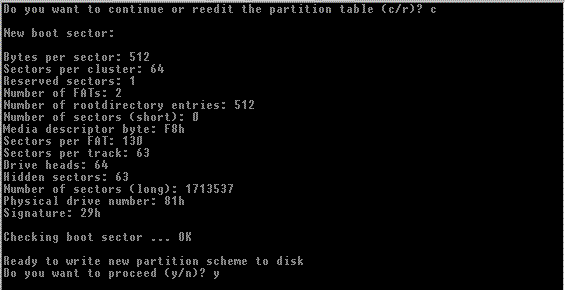

[ < ][
|| ][ > ]
Creando particiones
Para ver esta sección necesitarás estar en un entorno gráfico,
así que ves preparando tu sesión X-Window, o cualquier otro
Sistema Operativo Gráfico que utilices (OS/2, Mac, Windows...)

Lo primero y fundamental será ejecutar el programa fips que
está en el disquete, pues se supone que ya lo habremos copiado al
disquete.

Seleccionaremos el disco duro (en el caso de que tuviéramos más
de uno) donde realizaremos la nueva partición.

Seleccionaremos la partición MS-DOS/VFAT de Windows de donde
crearemos una nueva partición (creando la nueva partición
a partir de la
existente de Windows).

Le diremos, si proceder.

Seleccionaremos el tamaño, bastará para hacerlo con mover
las teclas del cursor (arriba y abajo)

Y confirmamos.
Ahora, se hace lo más fácil:
-
Reiniciamos el ordenador
-
ejecutamos FDISK
-
Eliminamos la nueva partición creada
-
Reiniciamos el ordenador
-
Entramos en linux
-
Creamos la partición con el FDISK o DISKDRUID de Linux
-
y la formateamos con: mkfs -t ext2 -c /dev/[discoduro_y_particion]
(en este caso /dev/hdb2)
-
Y ya está formateada, ahora sólo faltará usarla y
llenarla de datos
-
También podrá ponerla dentro de mtab, para que sea montada
por el demonio fsmount, automount o cualquier otro en el proceso de inicio
(carga) de Linux.
-
Ejemplo de fstab (La aplicación
que se utilizó para la elaboración de este fichero ha sido
linuxconf)
[ < ][ || ][
> ]